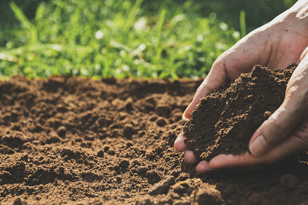
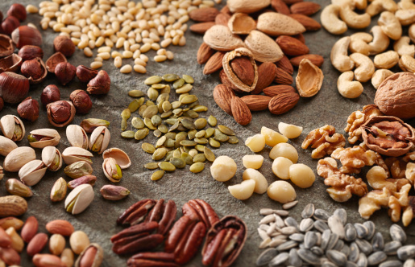

Soil is the loose surface material that covers most land. It consists of inorganic particles and organic matter. Soil provides the structural support to plants used in agriculture and is also their source of water and nutrients. Soils vary greatly in their chemical and physical properties. Processes such as leaching, weathering and microbial activity combine to make a whole range of different soil types. Each type has particular strengths and weaknesses for agricultural production.
Fertilizers are any naturally or chemically derived material containing the nutrients essential for plant growth. They are available in the form of manures, compost, and granular or liquid amendments. Most often we apply them to a plant’s root system or as a foliar spray.
1.Natural 2.ChemicalSeeds contain all the starting materials necessary to develop into complex plants. Because of this, they are extremely nutritious. Seeds are great sources of fiber. They also contain healthy monounsaturated fats, polyunsaturated fats and many important vitamins, minerals and antioxidants. When consumed as part of a healthy diet, seeds can help reduce blood sugar, cholesterol and blood pressure.
